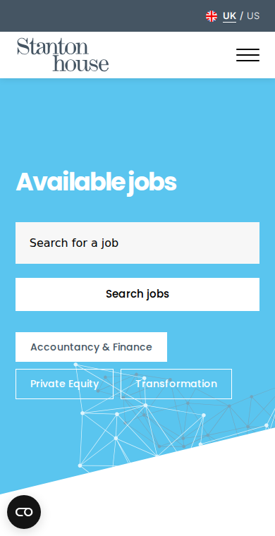

Discreet roles need a clearer path
The jobs page says many roles are not listed. Add a "role not shown?" route beside search and zero-result states.
Prepared for Stanton House
Saw the live Finance SME - NetSuite search. It points to a hard billing and revenue programme, where speed, fit, and clean candidate data all matter.

The NetSuite role says Stanton House is moving a narrow finance transformation search, not a broad finance brief. The hard part is likely the mix of billing, revenue, Salesforce, NetSuite, and controls. That mix creates search noise for recruiters and candidates. If the web flow does not capture those terms well, strong people can miss the route. Stanton House Jobs already has the right detail in the role page, so the next win is to turn that detail into matching data.
The jobs page says many roles are not listed. Add a "role not shown?" route beside search and zero-result states.
The role names Salesforce, billing, revenue, and controls. Make these tags for search, CRM, and similar jobs.
A short pilot to improve the Stanton House Jobs path, then hand over clean code and clear measures.
Relevant stack: React, Angular, Node.js, .NET, Python, Salesforce and NetSuite APIs.
Review search, role pages, apply form, guide links, and Bullhorn handoff around NetSuite transformation roles.
Create reusable tags for ERP, CRM, billing, revenue, controls, sector, work model, and contract type.
Add confidential-intake paths, cleaner fit prompts, and stronger similar-job links for scarce transformation searches and apply pages.
Track zero-result searches, apply starts, guide clicks, and recruiter tags, then train the team on handover.
Elinext is a full-cycle software development company, active since 1997, with about 700 in-house specialists and no freelancers. For Stanton House, the fit is web, data, QA, and integration work with a small team that can work under your lead. Elinext holds ISO 9001 and ISO 27001, which helps when candidate data and client trust matter. We have delivered work for Siemens, Broadcom, Volkswagen, TRUMPF, and TUI. That same delivery model fits the focused pilot above.

Elinext built a modern job portal with rich search and applicant functionality for an HR startup.
Read case studyElinext replaced spreadsheet work with a web talent system for CVs, documents, notes, and skill reviews.
Read case study